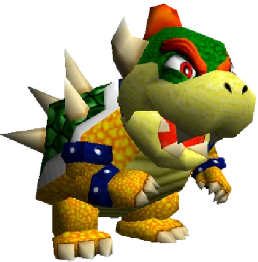

|  |
IzgledBowser je ogroman zmaj/kornjača sa zelenom školjkom prekrivenom šiljcima, narandžastim telom, rogovima i oštrim zubima. Njegov izgled je zastrašujuć i prepoznatljiv. UlogaBowser je glavni negativac u Super Mario 64. Zarobio je princezu Peach i preuzeo kontrolu nad zamkom. Mario mora da ga pobedi u tri specijalna nivoa kako bi oslobodio Peach i povratio Zvezde moći. Zanimljivosti
|